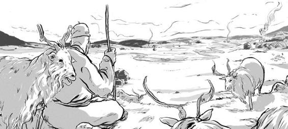
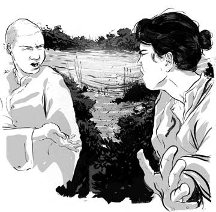
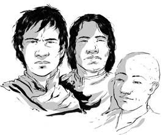
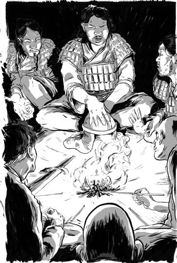
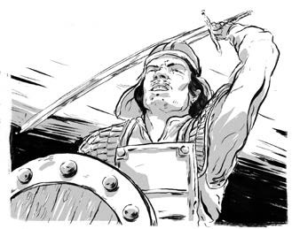
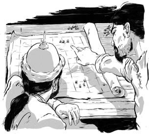
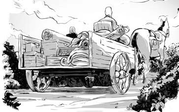
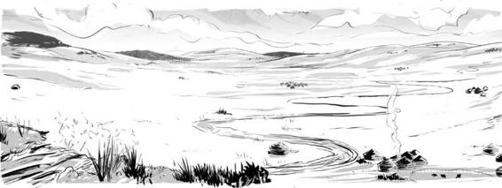
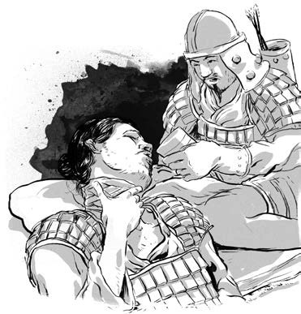

Người của Trát Mộc Hợp sống nhờ chăn nuôi, không giống dân săn bắn như Thiết Mộc Chân.
Họ sống trên đồng cỏ rộng lớn nơi chăn thả cừu, dê và các loại gia súc khác. Lần đầu tiên trong đời, người của Thiết Mộc Chân được thưởng thức những bữa ăn đều đặn với sữa, pho mát và thịt. Đàn gia súc khỏe mạnh chính là một phần nguồn sống của bộ tộc.
.

Trát Mộc Hợp muốn thống nhất tất cả bộ lạc Mông Cổ trên thảo nguyên thành một bộ tộc lớn mạnh. Thiết Mộc Chân cũng vậy.
Là anda của Trát Mộc Hợp, Thiết Mộc Chân có cùng địa vị và quyền lực trong bộ lạc. Chàng luôn ở bên cạnh Trát Mộc Hợp, giúp đỡ và học hỏi từ người anh em của mình.
Nhưng sau đó một năm rưỡi, Trát Mộc Hợp bắt đầu đối xử với Thiết Mộc Chân như bề dưới. Một đêm, Trát Mộc Hợp bảo Thiết Mộc Chân cắm trại ở bên cạnh dòng sông, nơi có thể chăn thả cừu dê, còn Trát Mộc Hợp sẽ cắm trại trên thảo nguyên cùng ngựa, bò và lạc đà. Đó quả thật là một sự sỉ nhục.
Bột Nhi Thiếp vô cùng tức giận. Cô nói với Thiết Mộc Chân rằng Trát Mộc Hợp đã không cần tới họ và họ nên rời bộ tộc của Trát Mộc Hợp. Những ai muốn rời đi có thể đi cùng họ.
Đó là những gì Thiết Mộc Chân đã làm.
Vào một ngày khi Trát Mộc Hợp dừng lại để dựng trại, nhóm người của Thiết Mộc Chân vẫn di chuyển tiếp. Một vài người bỏ lại Trát Mộc Hợp để theo họ. Họ đã di chuyển suốt cả đêm.

Trát Mộc Hợp không đuổi theo Thiết Mộc Chân, nhưng hơn hai mươi năm sau, hai người trở thành kẻ thù không đội trời chung.
Trong nhiều năm, nhóm của Thiết Mộc Chân đã có nhiều người gia nhập, và chàng có thêm ba người con trai: Sát Hợp Đài, Oa Khoát Đài và Đà Lôi.

Không như các tộc trưởng khác, Thiết Mộc Chân phong chức tước dựa trên năng lực chứ không dựa trên huyết thống. Người hầu Gia Luật Mễ và người bạn Bác Nhĩ Truật trở thành hai trợ thủ đắc lực của chàng. Người em trai Cáp Tát Nhi lo việc phòng vệ.

Một ngày mùa hè năm 1189, Thiết Mộc Chân triệu tập người của mình tới hồ Thanh Hải. Tại đây, chàng tự xưng là thủ lĩnh Mông Cổ. Nhưng Trát Mộc Hợp vẫn có rất nhiều người dưới trướng.
Thiết Mộc Chân gửi lời tới đồng minh hùng mạnh của mình, Thoát Lý. Chàng hứa sẽ không xâm phạm đến chủ quyền của Thoát Lý. Chàng chỉ muốn thống nhất Mông Cổ, và Mông Cổ sẽ vẫn phục tùng bộ tộc Khắc Liệt. Thoát Lý mừng rỡ khi biết có người muốn lật đổ thế lực đang lớn mạnh của Trát Mộc Hợp.
Chuyện đến tai Trát Mộc Hợp, ông ta vô cùng tức giận, liền cho quân tấn công trại của Thiết Mộc Chân. Thiết Mộc Chân cùng bộ lạc chạy trốn về phía những ngọn núi. Khi họ trốn, Trát Mộc Hợp trở lại trại của Thiết Mộc Chân.
Người Mông Cổ thường sử dụng cung tên trong săn bắn và chiến tranh. Họ tránh cận chiến mỗi khi có thể. Nhưng Trát Mộc Hợp lại chém đầu người của Thiết Mộc Chân và buộc đầu họ vào đuôi ngựa.

Hơn thế nữa, Trát Mộc Hợp còn thả bảy mươi người của Thiết Mộc Chân vào vạc nước sôi.
Với người Mông Cổ, đầu là bộ phận thiêng liêng nhất trên thân thể, và làm vấy máu là tội lỗi khủng khiếp. Cho một người vào vạc nước sôi là giết chết cả phần hồn lẫn thể xác của người đó. Sau những hành động man rợ ấy, nhiều người bỏ Trát Mộc Hợp để gia nhập với Thiết Mộc Chân.
Thiết Mộc Chân và thuộc hạ đã hồi phục sau lần bị tấn công. Năm năm sau, vào năm 1195, một cơ hội tuyệt vời đã đến khi Thoát Lý cử Thiết Mộc Chân đi đột kích người Thát Đát ở thảo nguyên phương Đông, nơi có rất nhiều của cải quý giá.
Đế chế Nữ Chân hay nước Đại Kim hùng mạnh, rộng lớn nằm ở phía nam sa mạc Gobi, phía bắc Trung Hoa. Có năm mươi triệu dân sống ở đó, đứng đầu là vua Kim. Thoát Lý được vua Kim yêu cầu tấn công người Thát Đát.

Suốt bốn năm, người Thát Đát đã bảo vệ người Nữ Chân khỏi các bộ tộc khác. Đổi lại, họ phải cống nạp những lễ vật quý như lụa là, khí giới và châu báu. Nhưng giờ vua Kim tỏ ra lo lắng khi người Thát Đát ngày càng trở nên hùng mạnh. Ông sợ rằng một ngày người Thát Đát sẽ tấn công mình, nên quyết định sẽ đi trước họ một bước.
Thiết Mộc Chân rất sẵn lòng giúp họ. Người Thát Đát đã đầu độc cha chàng - và trên thảo nguyên, chưa bao giờ quá muộn để trả thù.
Trận chiến đã được định đoạt. Người Thát Đát bị đánh bại. Thiết Mộc Chân trở về nhà với rất nhiều châu báu của cải.

Vải satanh đính vàng, nôi nạm bạc, chăn làm từ lụa. Người của Thiết Mộc Chân chưa bao giờ giàu có đến thế!
Từ đó, Thiết Mộc Chân luôn tìm cách mở rộng lãnh thổ của mình. Một bộ tộc phía Nam hứa sẽ giúp chàng chiến đấu chống lại Thát Đát. Nhưng họ đã không xuất hiện mà ngược lại còn đột kích trại của Thiết Mộc Chân khi chàng vắng mặt.
Năm 1197, Thiết Mộc Chân quyết định tấn công bộ tộc đó để trả thù. Tộc trưởng bị chặt đầu. Nhưng thay vì bắt tất cả những người khác làm tù binh - theo lẽ tự nhiên trên thảo nguyên - chàng lại chào đón tất cả tới bộ tộc của mình. Đó là cách hành xử chưa có bao giờ của một người tộc trưởng.
Bằng cách thống nhất hai bộ tộc, bộ tộc của Thiết Mộc Chân đã lớn mạnh hơn bao giờ hết. Thiết Mộc Chân đưa người của mình đến một vùng đất mới chinh phạt. Một đồng cỏ rộng mênh mông, rất phù hợp để định cư. Gần đó còn có một dòng suối tự nhiên, bởi vậy họ đặt tên cho quê hương mới là Aurag, mang nghĩa là “nguồn” trong tiếng Mông Cổ.

Bốn năm sau, vào năm 1201, Trát Mộc Hợp triệu tập một cuộc họp và tự xưng là Cổ Nhi Hãn, “vua của những vị vua”. Đó là một lời thách thức với Thiết Mộc Chân.
Những người đàn ông đã từng thân thiết như anh em giờ lại đối địch trên chiến trường. Biết mình bị áp đảo quân số, Trát Mộc Hợp đã tháo chạy.
Trong trận chiến, Thiết Mộc Chân đã bị một mũi tên sượt qua cổ. Mũi tên có thể đã bị tẩm độc, bởi sau đó Thiết Mộc Chân bất tỉnh. Bạn bè thân thiết và người hầu Gia Luật Mễ đã hút máu độc ra khỏi vết thương của chàng trong suốt nhiều giờ. Khi Thiết Mộc Chân tỉnh lại và kêu khát, Gia Luật Mễ đã băng qua chiến trường và mang về một ít sữa chua. Thiết Mộc Chân đã sống sót, và không bao giờ quên sự xả thân của Gia Luật Mễ.
Ngày tiếp theo, Thiết Mộc Chân tiếp tục bám theo và bắt giữ tất cả kẻ thù đã bỏ trốn trong đêm. Một lần nữa, chàng hành quyết kẻ đứng đầu và cho phép những người còn lại gia nhập bộ tộc.

Trát Mộc Hợp đã chạy thoát.
Cuộc đối đầu cuối cùng giữa hai người anh em đã bị hoãn lại.